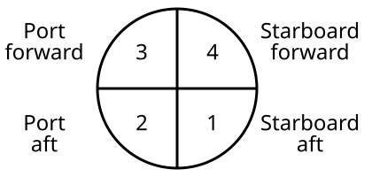
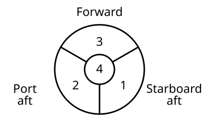
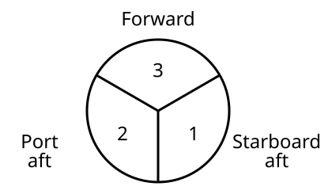

This section contains details about computing split beam angles.

Let yi be the complex value for sector i, and let
yforward = (y3 + y4) / 2
yaft = (y2 + y1) / 2
ystarboard = (y4 + y1) / 2
yport = (y3 + y2) / 2
Then
Alongship angle = 1/as ∠(yforward y̅aft) - ao
Athwartship angle = 1/as ∠(ystarboard y̅port) - ao
where
∠ denotes the argument of a complex number
¯ denotes the complex conjugate operator
as = Angle sensitivity
ao = Angle offset

The center sector is added to each of the three other sectors. Then the angles are computed in the same way as for three sectors.

Let yi be the complex value for sector i, and let
ϕ31 = ∠(y3 y̅1)
ϕ32 = ∠(y3 y̅2)
where
∠ denotes the argument of a complex number
¯ denotes the complex conjugate operator
Then
Alongship angle = 1/(√3 as) (ϕ31 + ϕ32) - ao
Athwartship angle = 1/as (ϕ32 - ϕ31) - ao
where
as = Angle sensitivity
ao = Angle offset